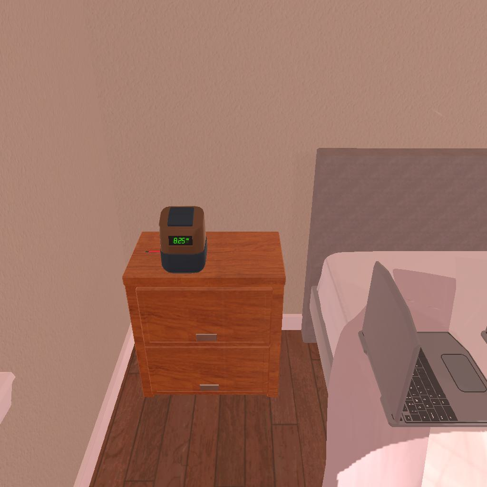

---------------------------------------------------------task: 2---------------------------------------------------------
--------------------------------------------------------------------------------------------------------------------------------------------------------------------
--------------------------------------------------------------------------------------------------------------------------------------------------------------------
Step:--------------------------------------------------------------------------2-------------------------------------------------------------------------------
----------------------------------------
VLM Prompt:
Image1:
Image2:
**Instruction**
1. Analyze the provided images to identify all visible household objects and compare the difference between images (e.h. whether the object is opened or not and taken on hand or not), focusing on those relevant to the task description "look at pen under the desklamp."
2. Use the analysis of images and the task hint "The agent must find an object of the desired type, locate and turn on a light source with the desired object in-hand." to answer the question: what is the most reasonable action in the choices for the task description "look at pen under the desklamp"?
3. Decide and write the answer using the template: The answer is: (i): , where i is the real number. If there is no desired object in images, search every place based on **Initial Observation** to find the object. And if no one is exactly correct, choose a similar answer.
**Initial Observation**
You are in the middle of a room. Looking quickly around you, you can see bed (1-2), dresser (1), drawer (1-11), sidetable (1-2), desk (1), garbagecan (1), safe (1)
**Answer Choices**
(1): go to bed 1
(2): go to dresser 1
(3): go to bed 2
(4): go to sidetable 1
(5): go to drawer 2
(6): go to sidetable 2
(7): go to drawer 3
(8): go to drawer 4
(9): go to garbagecan 1
(10): go to drawer 5
(11): go to drawer 6
(12): go to drawer 7
(13): go to drawer 8
(14): go to drawer 9
(15): go to drawer 10
(16): go to drawer 11
(17): go to safe 1
(18): open drawer 1
(19): close drawer 1
(20): examine drawer 1
**Answer**
Let's think step by step by following the instructions.
----------------------------------------
----------------------------------------
Original Response:
Image 1 shows a desk with a pencil, a black cap, and a coffee mug on it. There is no pen or desklamp visible in this image. Image 2 displays a sidetable with a digital clock and a laptop on it. Again, there is no pen or desklamp visible in this image either.
Based on the task description "look at pen under the desklamp," we need to find a pen and a desklamp. The task hint suggests that we need to have the pen in hand and turn on a light source (desklamp). Since neither a pen nor a desklamp is visible in the provided images, we must search every place according to the "Initial Observation."
Looking at the answer choices, the most reasonable action would be to go to the desk since it is the most likely place to find a pen and a desklamp in a typical room setup. However, there is no specific action to "go to desk 1" in the answer choices. The closest option to this action is to go to sidetable 2, where we see a digital clock and a laptop, which might indicate it is a working area and a pen could be nearby.
The answer is: (6): go to sidetable 2.
----------------------------------------
----------------------------------------
>>> Refine Original VLM Response and Get Pure Action: go to sidetable 2
----------------------------------------
-----------------------------------------------------------------
Running time: 12.208920240402222 seconds
Total Money: 0.55576
-----------------------------------------------------------------
-----------------------------------------------------------------
Text Observation:You arrive at loc 6. On the sidetable 2, you see a pillow 1, a desklamp 1, a keychain 1, a pencil 2, and a creditcard 1.
-----------------------------------------------------------------
UNSUCCEED